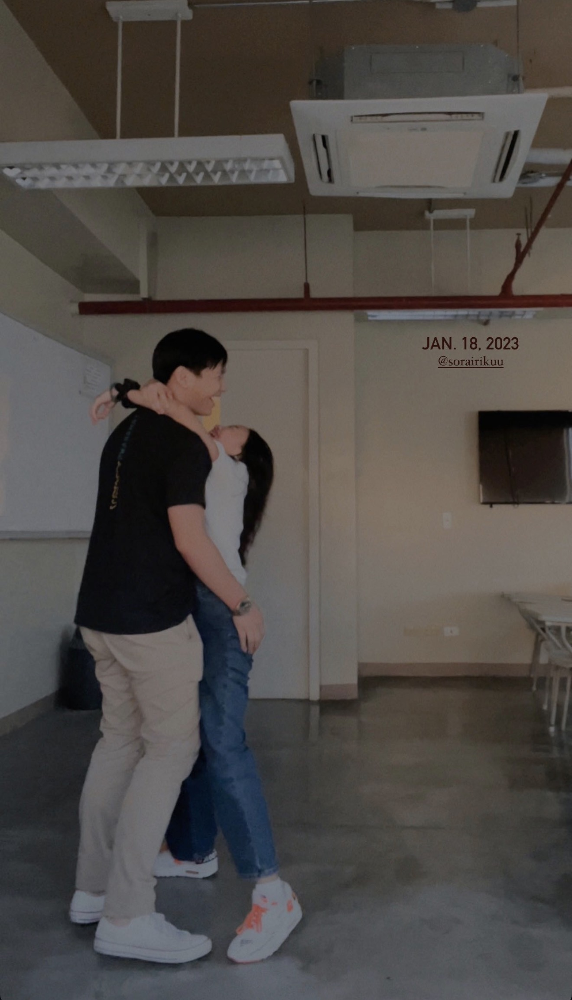
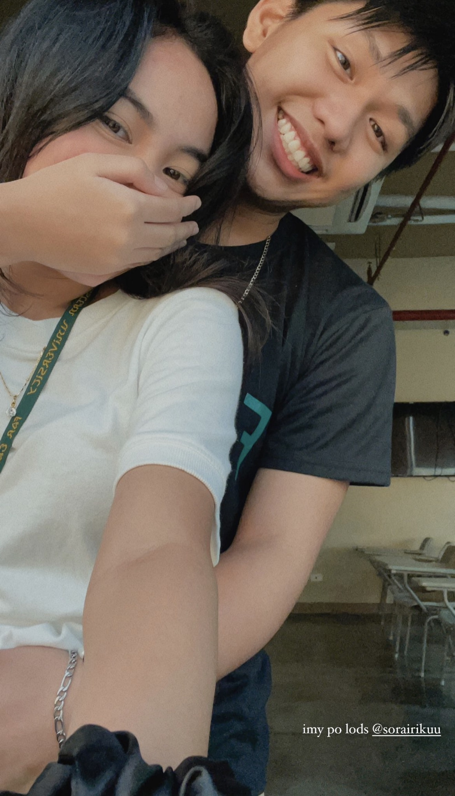
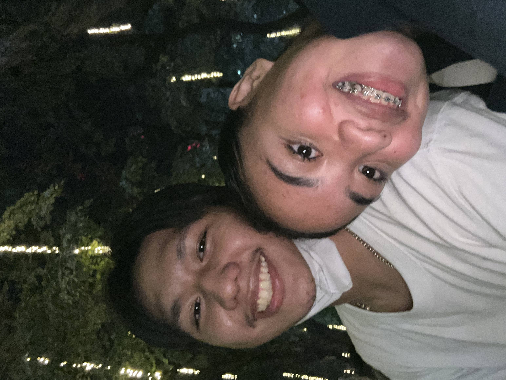
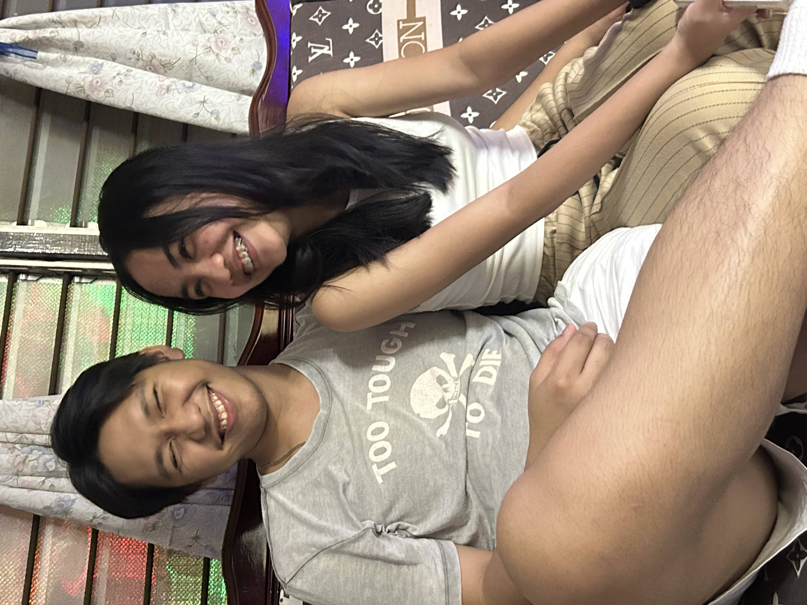
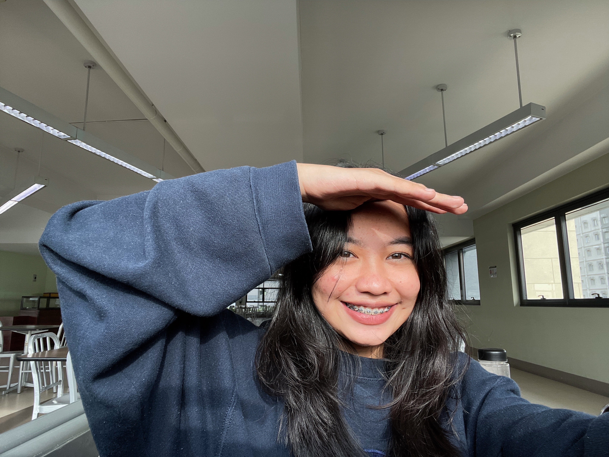
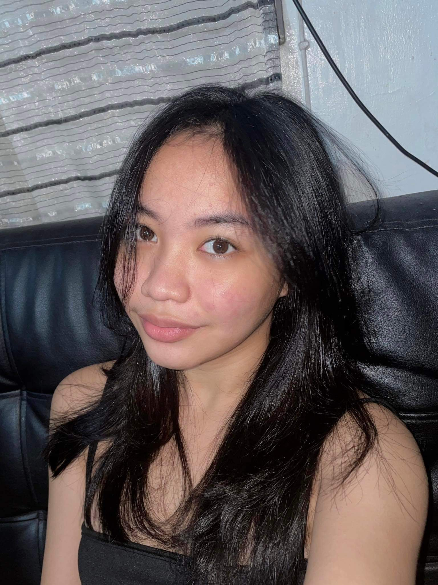

01
Where it all started
We came from two different worlds.
She was a nursing student from FEU Manila, while I was studying Computer Engineering at FEU Tech. We weren't classmates, we weren't from the same branch, and honestly, there wasn't really any reason for our paths to cross.
But somehow, they did.
We met through a mutual friend, JB. Looking back, it's funny to think that someone who eventually became such a small part of our lives was the reason the two of us ever started talking.
When I first saw her, I thought she was cute.
The funny thing was, I already had a crush on someone else at the time. And apparently, she wasn't even trying to get together with me. She initially wanted to set me up with one of her friends.
So naturally, I did what any reasonable person would do.
I messaged her first.
I thought she was cute, I had a feeling she might like me, and I figured...
why not?
That little message turned into conversations that lasted through the day and into the night. One conversation became another, and somewhere along the way, we started liking each other more and more.
I eventually found out that one of the reasons she initially liked me was because she thought I was rich and had a car.
Honestly, looking back, that's still one of the funniest things about how we started.
But whatever her reason was at the beginning, it became something much bigger than that.





